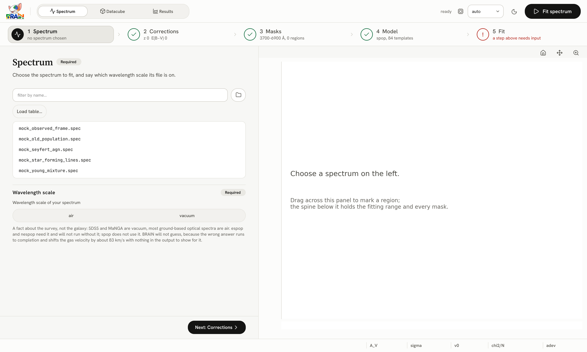
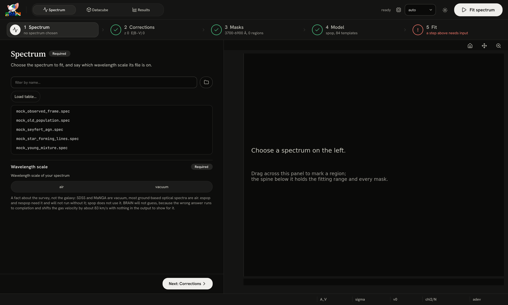
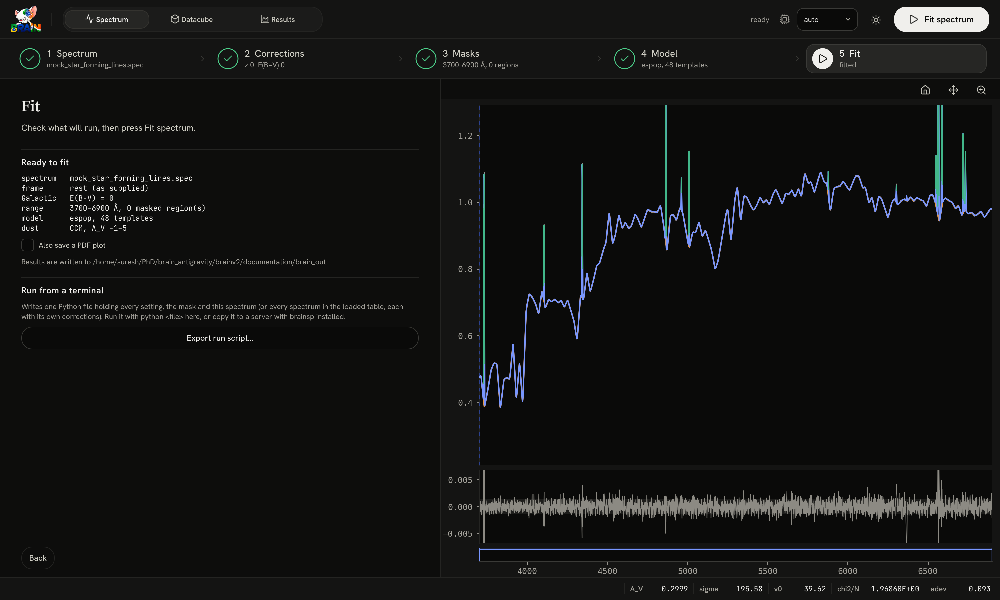
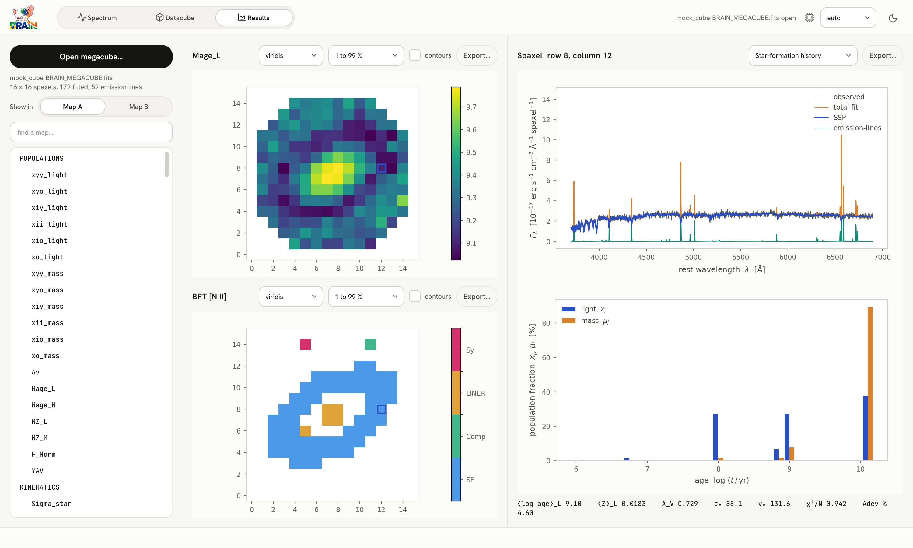
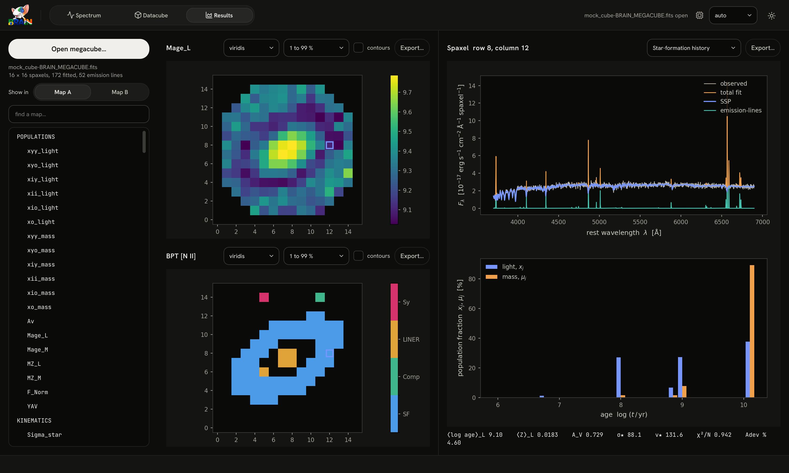

Your first fit in the interface#
In ten minutes, with no code: fit a mock spectrum, then a mock datacube, and read the results. The mock data come with BRAIN and their true properties are known, so you can see whether the answers are right.
Before you start#
Write the example data once, then open the interface:
brainsp examples # writes ~/.brainsp/examples, which the interface opens with
brainsp gui


The window on start-up. The three workspaces are at the top left, the numbered steps of the open workspace below them, the controls of the current step on the left and the data on the right.
The window has three workspaces, chosen at the top left: Spectrum (fit one spectrum or a table of them), Datacube (prepare and fit datacubes) and Results (explore a fitted datacube). Each workspace is a row of numbered steps, done from left to right. Under each step’s name a short line says its state, and a tick appears once the step has what it needs. Every panel is marked Required or Optional; the optional ones have sound defaults and can be left as they are.
Fit a spectrum#
Choose the spectrum
In step 1 Spectrum, click
mock_star_forming_lines.specin the list. The spectrum is drawn on the right. Under Wavelength scale, choose vacuum: the mocks are on vacuum wavelengths, like SDSS and MaNGA.Leave the corrections alone
Step 2 Corrections removes the redshift and the Milky Way’s dust. This mock is already in the rest frame and has no Galactic reddening, so leave both at zero and keep The spectrum is already in the rest frame ticked.
Skip the masks
Step 3 Masks lets you drag across the plot to leave regions out of the fit. Nothing needs masking here.
Choose the model
In step 4 Model, choose espop under Nebular treatment, so that the emission lines are fitted as well. Leave the templates (BasesGM, every age and metallicity), the dust and the kinematics at their defaults.
Fitting lines uses the wavelength scale you gave in step 1; without it, espop and nespop do not run.
Fit
Step 5 Fit summarises what will run. Press Fit spectrum at the top right.


The fitted spectrum: the data in black, the model over it, and the residuals below. The headline numbers (A_V, σ, v₀, χ²/N, adev) are in the bar at the bottom of the window.
The fit takes a few seconds the first time, while BRAIN compiles it, and about a second afterwards. Its files are written to a folder brain_out in the folder you started BRAIN from: the summary, the fitted spectrum and the settings record (What a fit writes). Step 5 shows the exact path.
Fit a datacube#
Open the cube
Choose the Datacube workspace. In step 1 Cubes, press Open datacube… and pick
cube/mock_cube.fitsin the examples folder. Its flux map appears on the right; click any spaxel to see its spectrum under the map. Under Wavelength scale, choose vacuum.Give the redshift
In step 2 Corrections, type 0.02 in Redshift. This step is required: BRAIN does not read the redshift from the file.
Choose which spaxels to fit
Skip step 3 Preparation. In step 4 Masks, keep Signal-to-noise mask ticked and click the threshold 3: the map hatches in yellow the spaxels a cut at S/N 3 would leave out. Then, in 5 Model, choose espop, as for the spectrum.
Run
In step 6 Run, press Run the pipeline. Each spaxel takes the accent colour on the map as it is fitted, and the run’s log scrolls below.
Look at the result
When the run finishes, press View results. The Results workspace opens the megacube: pick any map from the list on the left, click a spaxel to see its spectrum and star formation history, and choose BPT [N II] diagram on the right for its emission-line diagnostic.


The Results workspace on the fitted mock cube: two maps side by side on the left, and the spectrum, the star formation history and the numbers of the spaxel clicked on the right.